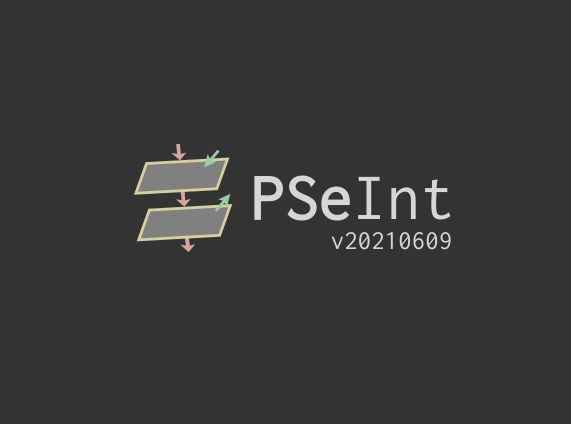

En este documento web podras encontrar todo lo relacionado con pseint, aprenderas a crear algoritmos desde cero.
aprenderas como usar todas las funciones que tiene está herramienta.
Si aún no tienes pseint, dale click al boton que dice Descargar Pseint que aparece en la parte inferior izquierda de la pantalla,
una vez lo descargues lo instalas.
